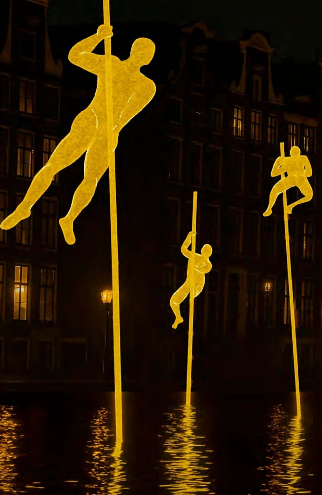
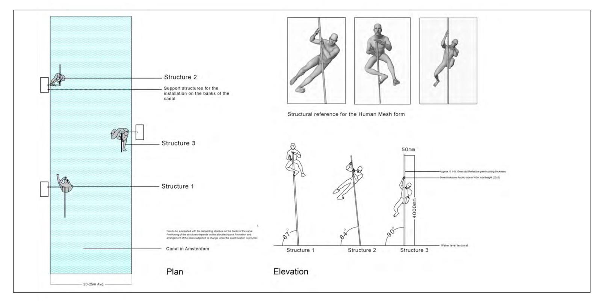
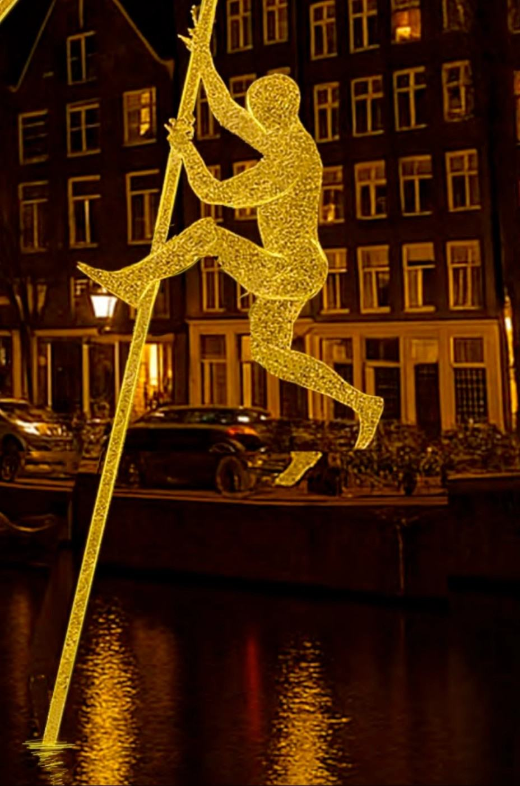

Leap of Light was shortlisted to the top 30 of 730 submissions for Amsterdam Light Festival, Edition 15.
The idea
Three life-sized figures are caught mid-leap above the water, lit in gold against the dark. Each holds a different moment of a crossing: the climb, the launch, the suspended arc.
Fierljeppen
A traditional sport of the Netherlands, originating in the province of Friesland. It involves pole vaulting across canals and stems from the practical need to cross waterways. It is now a competitive and cultural sport that highlights the Dutch connection to their water-rich landscape.
Concept note
Leap of Light
Leap of Light is a site-specific light installation inspired by Fierljeppen, the traditional Dutch sport of vaulting across canals. Suspended above the waters of Amsterdam, illuminated silhouettes of human figures are captured mid-leap, held in the instant of flight. This frozen arc, drawn from the rhythms of rural waterways, becomes more than a mere gesture of athleticism. It is a meditation on the threshold. Between ground and sky, each leap holds the tension of elsewhere, where the body waits for the self to catch up.
The work reimagines this iconic act of crossing as a metaphor for migration, movement, and the ongoing act of becoming. It reflects on the human experience of transition, not only the physical crossing of borders, but also the emotional threshold between one shore and the next. In Amsterdam, a city built on bridges and bound by movement, the vault becomes a reflection of now and an echo of then.
By invoking the vault as both motion and pause, the installation mirrors the dual states of stillness and passage. It invites viewers to inhabit that in-between space, to sense in the suspended leap a resonance with the many transitions which are not only personal and cultural, but also spatial in a way that defines the city's evolving identity.
Why Amsterdam
A city built on arrival
Amsterdam grew through migration. In its Golden Age, immigrants including Germans, French Huguenots, Jews and Armenians were roughly 30-40% of the population, and the city's tolerance helped turn it into a multicultural trading hub.
Today more than half of its residents have a migration background. Yet the city's own Burgermonitor 2025 reports that fewer Amsterdammers feel at home here, newcomers and migrants most of all. The leap lives in that gap between arriving and belonging.
The Netherlands, 2025. Sources: CBS (Statistics Netherlands); OECD / Gemeente Amsterdam on migration background; O&S Amsterdam Burgermonitor 2025.

The experience
Stand in the in-between
From boats and from both quays the figures read as one gesture across the canal. The poles lean at 87°, 84° and 90°, so the arc can be read from either bank.
The water completes the leap: each pole and body is doubled in the canal and trembles with it. A crossing that lasts a second can be looked at for as long as a visitor wants.
Light design
Sculpted out of darkness
Light gives the suspended mesh figures their form and emotional weight. Shore-mounted CLF Sera outdoor wash lights target each figure from the bank. They are rated IP65 for the canal-side environment and have a 15.6° beam angle, chosen to hit the sculptures precisely with minimal spill.
The programme is deliberately simple and standalone: one warm gold, with a slow fade.
Illustrative. The design uses 15.6°. A 20 m throw is assumed from the 20-25 m canal width.
Making it
Built to hang over water
Plan and elevation

Three structures with supports on the canal banks. Click to enlarge.
